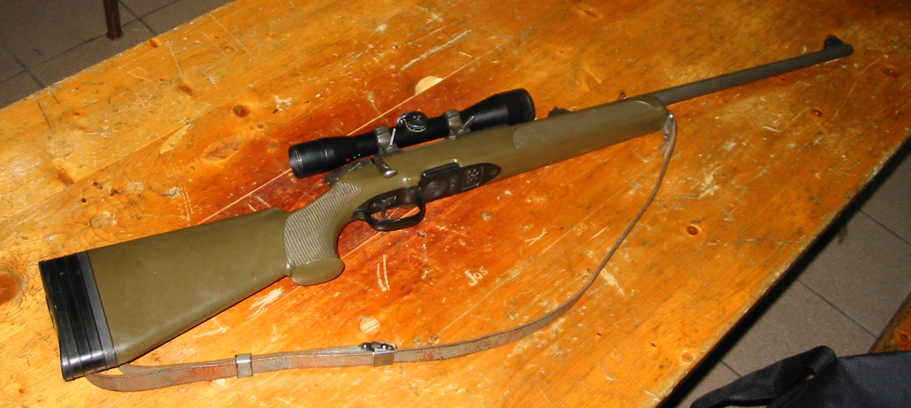

SSG 69狙擊步槍

斯泰爾SSG 69（德語：Scharfschützengewehr 69，意為：69式狙擊步槍）是一款由奧地利槍械製造商斯泰爾-曼利夏所研製及生產的旋轉後拉式槍機狙擊步槍，並在不久以後作為奧地利軍隊的制式狙擊步槍，也被不少執法機關所採用，可發射7.62×51公釐北約和.243溫徹斯特兩種口徑的步槍子彈。
- 斯太爾SSG 69是一枝使用曼利夏系統的手動狙擊步槍，儘管它在1969年通過（因以為名），但它比同期的狙擊步槍更為傾向使用合成材料（使用工程塑膠或木材製成的手握式槍托）、冷鍛法製造的槍管、只需轉動60゜就能開鎖及閉鎖的槍機和可調整扳機行程長短、扳機扣力大小的兩道火式設計扳機，因而帶來了高準確性的這些領先優勢。
重點是，雖然現在使用工程塑膠槍托的步槍相當普遍，但斯泰爾-曼利夏卻是全世界上第一間設計及生產安裝有工程塑膠槍托的步槍的廠商。除了槍托，該槍其他部件亦大量使用工程塑膠。
其槍機的結構設計獨特，在槍機前端設有6個閉鎖鎖耳，僅需要轉動60就能開鎖及閉鎖。SSG 69的槍管為自由浮動式安裝在槍托以上，即是只與槍管節套連接，而與護木並無接觸點。同時亦將傳統型圓筒式機匣加長，使槍管節套的長度達到57公釐，膛室位於機匣內，從而使槍管與機匣能更牢固地組合，因此可以大大提高射擊精度。拋殼口位於機匣右側上方的位置，結構強度十分可靠。
SSG 69有兩種供彈形式。第一種是5發可拆卸式旋轉式彈匣，與旋轉式彈倉一樣是把子彈在彈匣以內旋轉上升進入膛室；第二種是10發容量的可拆卸雙排式彈匣。
SSG 69是奧地利陸軍的制式狙擊步槍。SSG 69也在不少的執法機關之中使用。
SSG 69無論在戰爭還是大大小小的國際比賽之中都證明了它是一枝非常準確的步槍，因為SSG 69的準確程度大約是0.5 MOA，大大超出奧地利軍隊最初提出的狙擊步槍設計指標。
2015年，斯泰爾-曼利夏決定將SSG 69停產。